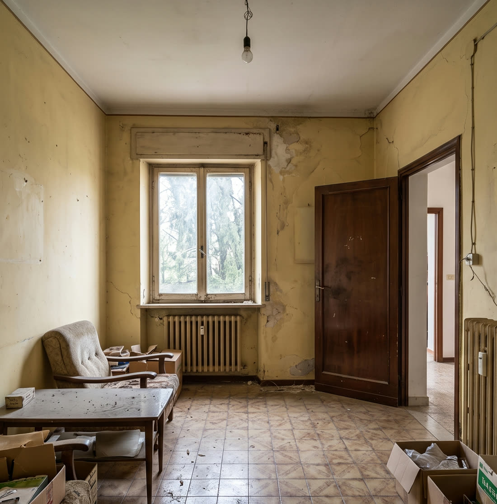
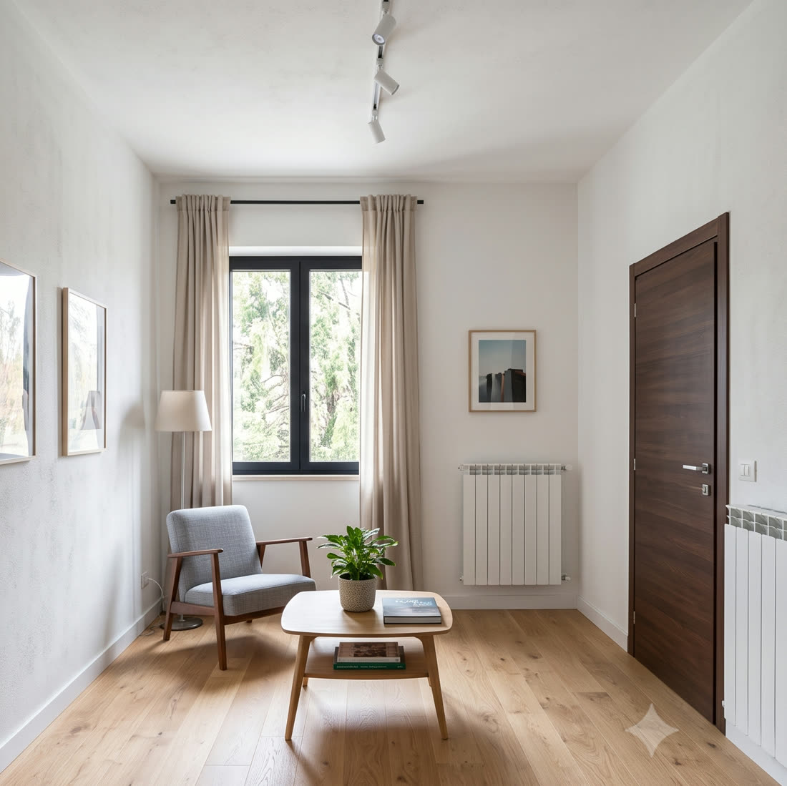

Chrome Extension
Align two photos by hand with precision controls, then compare them with a smooth draggable slider. Export as an image or a standalone interactive page — entirely in your browser, no account, no server.


Drag the slider — this is Image Compare Studio's actual comparison view.